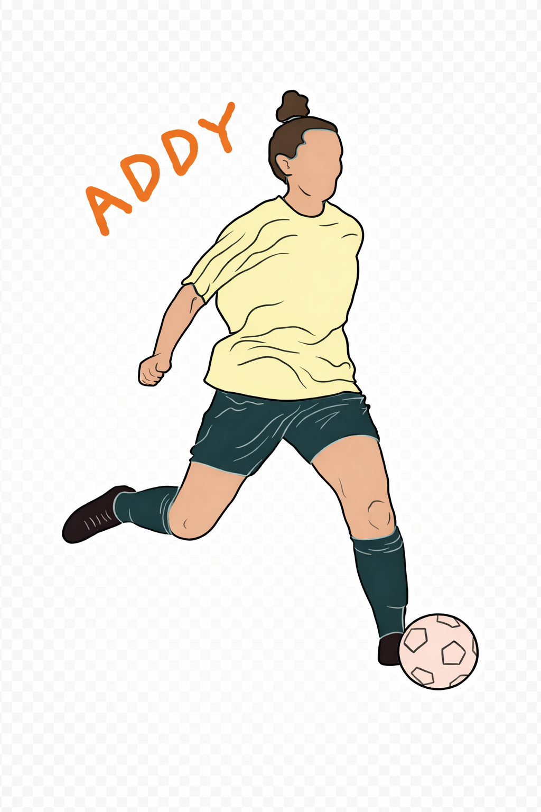
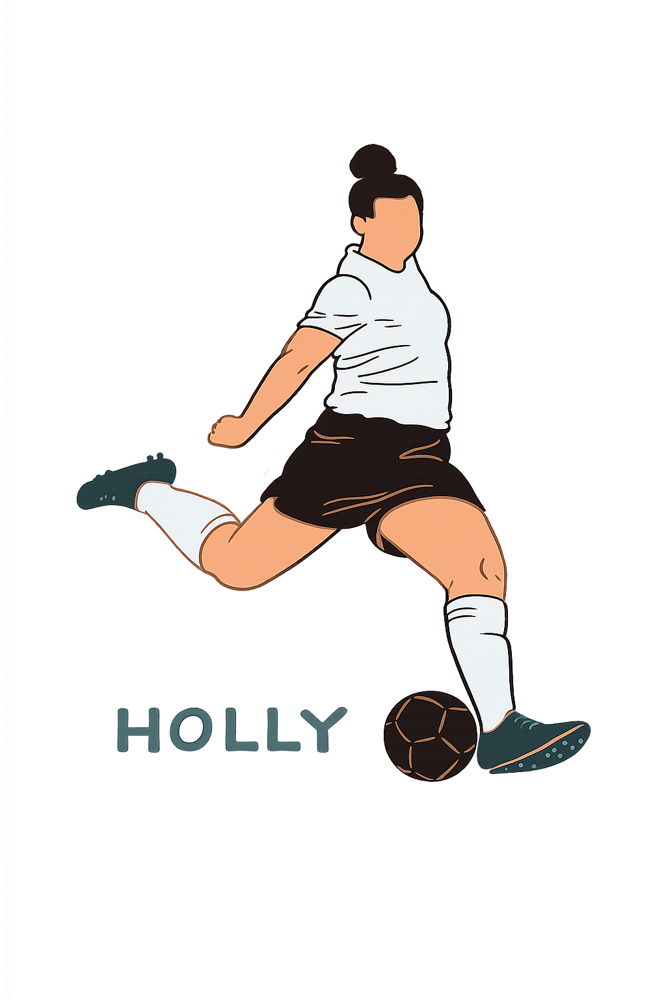

About
Our vision: to empower and inspire.
Our mission: to create meaningful experiences, by ensuring storytelling and connection are at the heart of everything we do.
Yard Football Creative was developed from the idea of taking football back to the backyard.
As kids, football was first discovered in our backyard and this is where we found the pure joy that can come from the simplicity of a single ball.
Hours and hours were spent in the yard with family and friends, playing until darkness no longer allowed us.
No pressure, no expectations, no distractions... just freedom to express ourselves and unapologetically dream big.
We want this to be a space for everyone to feel like that little kid again, a safe place where you feel you belong.
We believe that through connection, you feel belonging, and through belonging you feel empowered and inspired to create.
We're two sisters who grew up on a small farm, spending our nights kicking a ball around and fantasising about the life we'd make for ourselves.
As we grew older, and football grew far beyond the four sides of our backyard football pitch, we travelled to places we once thought we'd only ever dream of.
We experienced the highs and lows of life as female footballers, coaches and females working in the sporting industry.
We've spoken over many cups of tea a lot about our 'purpose' in life and more times than not we both find ourselves coming back to the same concept of wanting to create environments for others to feel safe to be themselves.
And that's why we've created this.
Somewhere for everyone to come, and hopefully feel they belong.
Behind The Brand...
We’re two sisters who grew up on a small farm, spending our nights kicking a ball around and fantasising about the life we’d make for ourselves. As we grew older, and football grew far beyond the four sides of our backyard football pitch, we travelled to places we once thought we’d only ever dream of.
We experienced the highs and lows of life as female footballers, coaches and females working in the sporting industry.
Among all of the amazing memories we’ve made and the incredible people we’ve met along the way, at times we found ourselves in environments that didn’t feel so good.
Ones where we didn’t feel safe to be ourselves and ones where something just felt a bit icky. For female and gender diverse individuals, this unfortunately is a story that you’ll hear far too often.
We’ve spoken over many cups of tea a lot about our ‘purpose’ in life and more times than not we both find ourselves coming back to the same concept of wanting to create environments for others to feel safe to be themselves.


We hope to show others how football can fuel connection in the most positive of ways.